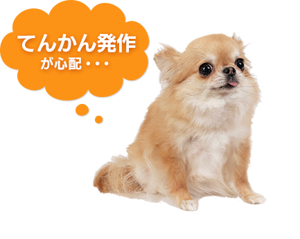
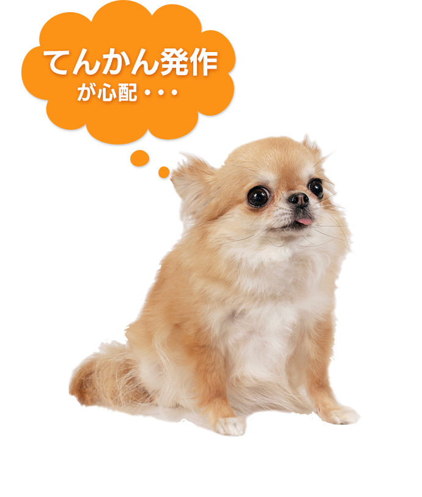
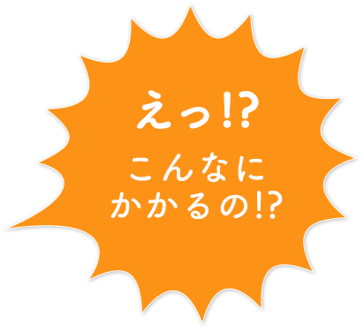
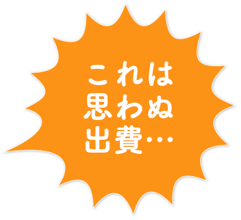
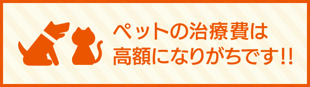
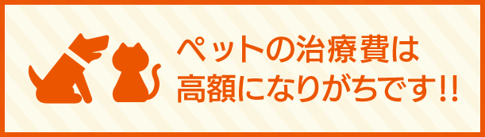

チワワってどんな犬？

特 徴
メキシコ原産のとても上品で小柄な品種です。警戒心が強い一方、人なつっこく、愛情をかけられると素直に喜ぶ性格です。
かかりやすい病気・ケガ
全身のけいれんなどを症状とする「てんかん発作」を起こしやすい品種です。
脳炎や水頭症など脳の異常が原因となる場合があります。
最初は一点を見つめる、そわそわするなどの前兆がみられ、その後手足が硬直したり、意識を失って倒れたりする発作が生じます。

てんかん発作の治療
原因を特定するのが難しく、発作を完全になくすことも難しいため、発作の回数を抑えることを目的として継続的に薬を与えます。発作が連続して起こる場合や、発作の時間が長い場合には入院して集中的に治療することもあります。
もしてんかん発作を起こしたら、
治療費にいくら位かかるの？
- 突然手足をつっぱらせ、倒れてしまう。呼びかけても意識がない様子。MRIの結果、特発性てんかんとの診断。
入院治療の後、内科的治療を継続。
| 入院・手術（3泊4日） | 通院（10日） | |
|---|---|---|
| 治療別 | 97,500円 | 80,000円 |
| 治療費計 | 177,500円 | |

ほんの数回の通院で、
治療費がかさんでしまうケースも！！
- お散歩中、花壇に顔を突っ込んだら、角膜にキズがついてしまう。通院治療。
| 入院・手術 | 通院（3日） | |
|---|---|---|
| 治療別 | なし | 12,200円 |
| 治療費計 | 12,200円 | |

 

だからこそ
大切な家族が万一のとき、治療費のことで
悩まないで済むように、
au損保は
「ペットの保険」をお届けします。

チワワはてんかん発作が心配！突然の病気やケガで入院や手術をした場合も、ちょっとした通院の場合でも、治療費は高額になりがちです。au損保の「ペットの保険」なら、チワワのもしもの病気やケガに備えることができるから安心です！！
- 注）上記治療費は一例です。実際の治療費・治療内容は症状、動物病院ごとに異なります。
B16C310065[1605]